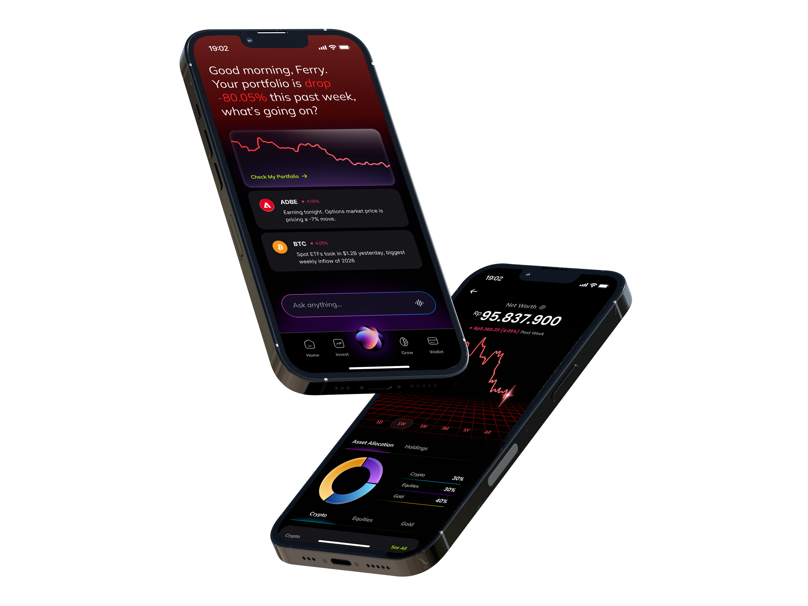
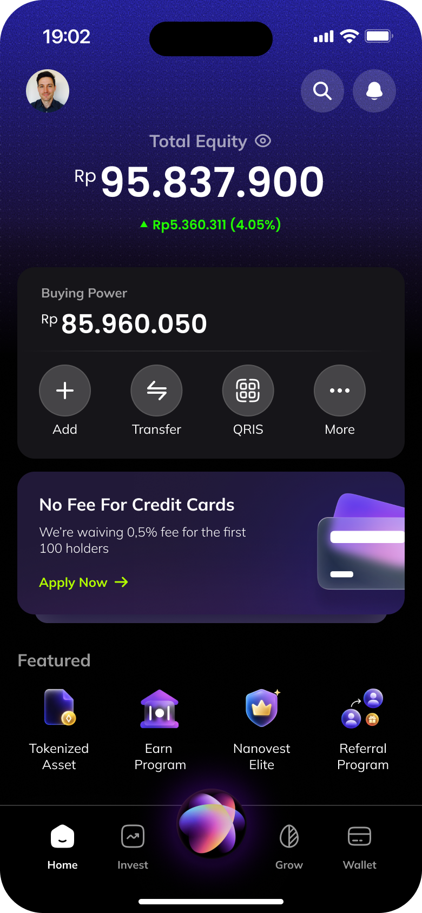
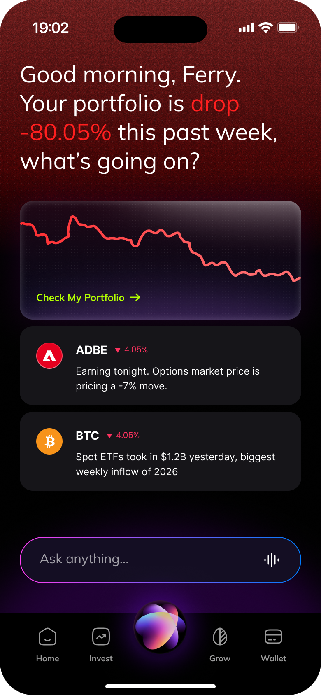
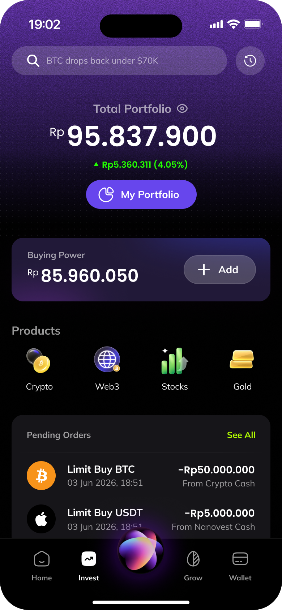
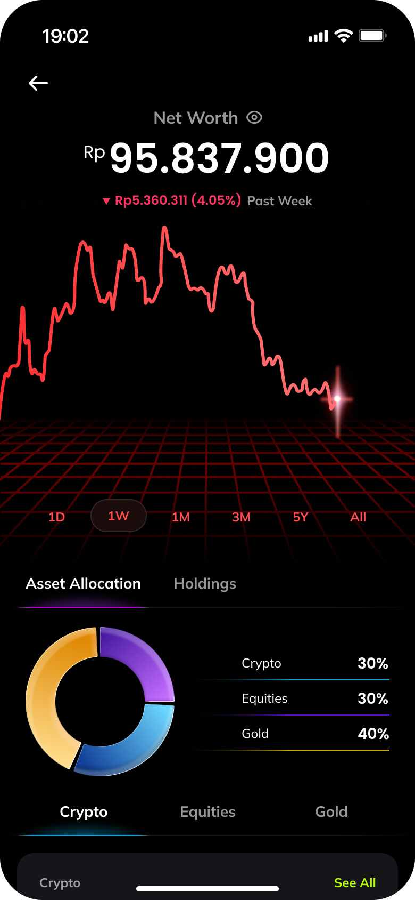
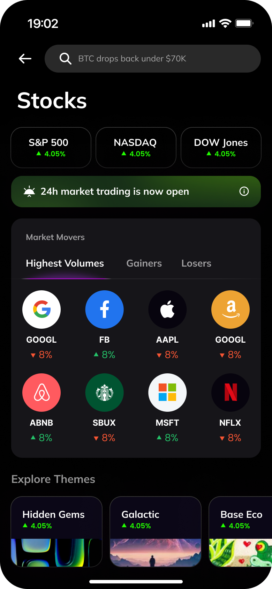
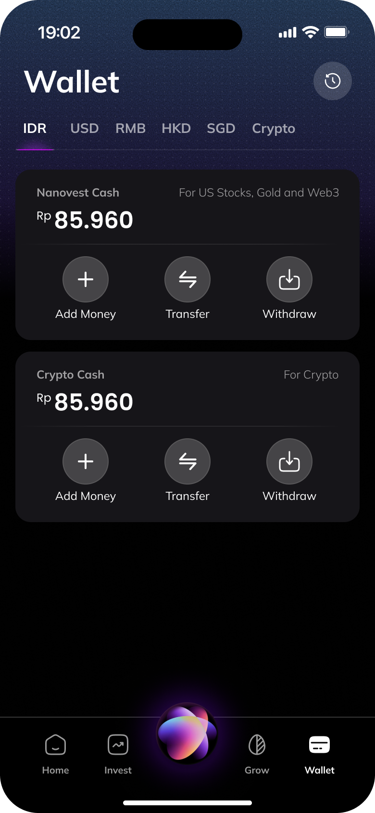
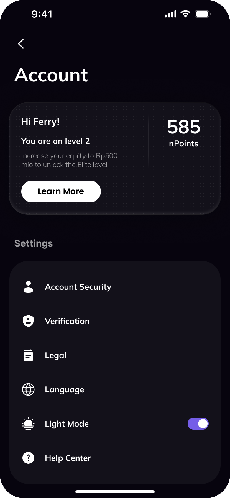
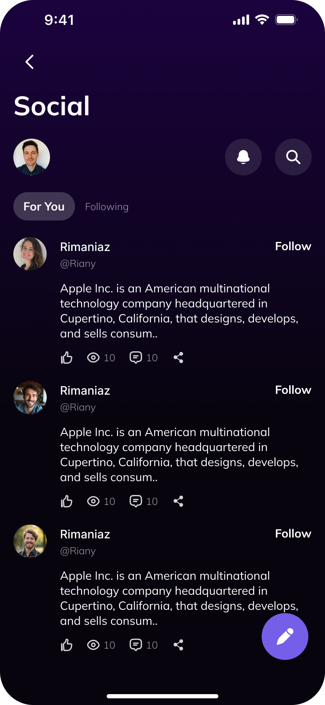

Nanovest App Redesign
A dark-mode-first redesign that gives Nanovest's AI a permanent home in the navigation itself, and trades the app's playful gradient identity for a calmer, more professional tech surface.
Visit nanovest.io- Client
- Sector
- Role
- Team
- Period
- Surface

Overview
Nanovest's next move is putting AI at the center of the investing experience, but the app's bright, gradient-heavy interface read as consumer-fun rather than as something trustworthy enough to hand financial decisions to. This redesign rebuilds the visual system around dark mode and a tighter, more technical palette, and gives the AI assistant a fixed home in the navigation bar itself, so it's reachable from every tab, not buried inside a single screen.
Look and feel

Scope
- 01Competitive teardown
- 02Dark-mode design system
- 03AI navigation model
- 04Information architecture
- 05AI insight surface
- 06Wallet & multi-currency flows
- 07Wireframes
- 08Interface design
- 09Empty & alert states
- 10Prototyping
Problem
The app's colour language undercut the seriousness of an AI advisor.
Nanovest's interface leaned on a bright purple-to-pink gradient and colourful, badge-style icons for nearly everything, Featured cards, product icons, promo banners. That reads as consumer-fun, which is the wrong register for a product about to hand out AI-generated financial judgement calls; the same visual language sitting under a stock alert and a referral promo made both feel equally weightless.
The AI itself had no fixed address. *Ask anything* lived inside Home's feed, one field among several, so using it meant being on the right screen first. An assistant that only exists on one tab isn't a navigation-level capability, it's a widget.
Approach
Dark mode as the default, AI moved into the navigation itself.
The interface rebuilt dark-first: near-black surfaces, a narrow set of cool graphite tones, replacing the purple-pink gradient identity with something closer to a trading terminal than a lifestyle app. Colour stopped decorating and started signalling, an accent only appears when it's carrying information, a gain, a loss, an alert that needs attention.
The center icon in the tab bar, previously a static brand mark, became the app's AI entry point. Tapping it from Home, Invest, Wallet or Account opens the same Ask Anything surface, so getting an answer never depends on which screen someone happens to be on.
On Home specifically, that AI layer surfaces as two things: a calm resting state in the everyday dark palette, and a deliberately sharper red state when the AI has something to flag, a drawdown, an earnings move, so the one moment worth noticing looks different from the fifty that aren't.
Screens








Results
Deliverables